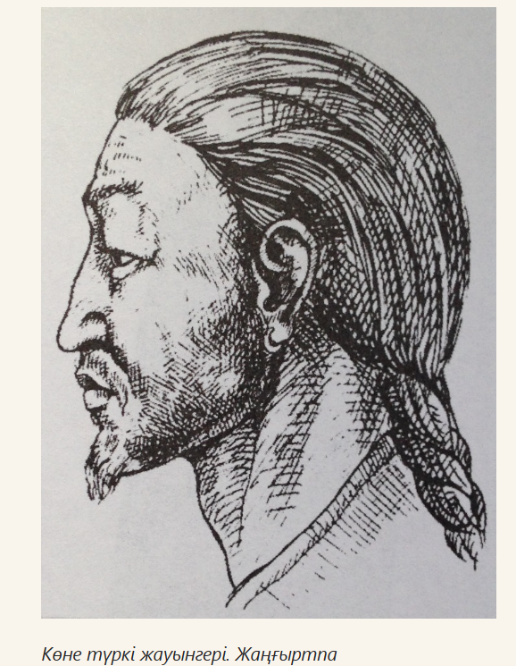
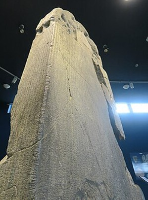
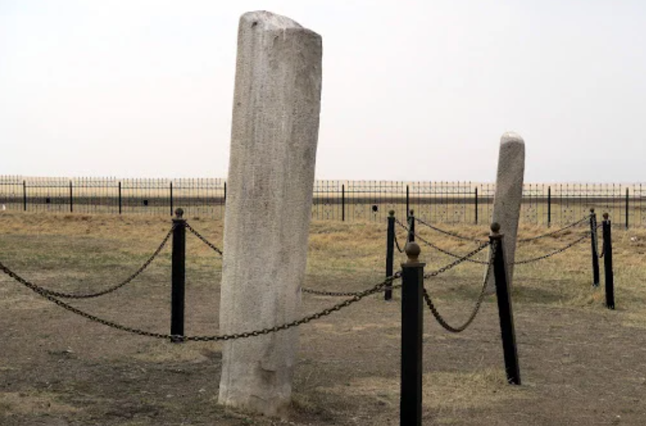
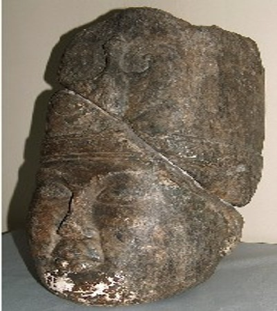
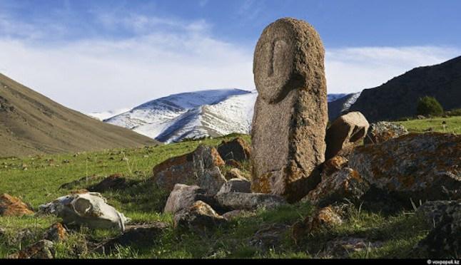

Қару-жарағы (Ер қаруы) Түркі жауынгерлерінің қару-жарақ кешені («бес қару» жүйесінің негізі) алыс және жақын шайқасқа арналған құралдардан тұрды: Садақ пен оқ (Жақ): Түркілердің ең басты метательдік қаруы. Олар ағаш, мүйіз, сүйек пен сіңірді қиыстырып жасаған күрделі құрама садақтарды қолданды. Сауыт бұзатын үш қырлы темір жебелер («сауыт бұзар», «көбе бұзар») мен кең жарақат салатын «қозы жауырын» жебелері кең таралды. Найза мен сүңгі: Атты әскердің шешуші шабуыл құралы. Темір ұшты ұзын найзалар қарсыласты аттан құлатуға және сауытын тесуге арналған. Қылыш пен семсер: Ерте орта ғасырларда түркілер арасында түзу кескіш қару — палаштар мен бірте-бірте иіле бастаған қылыштар пайда болды. Жауынгерлік балта (Айбалта) мен шоқпар: Жақын шайқаста жаудың қорғаныс сауыттарын талқандау үшін пайдаланылды.
Толық оқу (e-history.kz)
Орхондағы Күлтегін ескерткіші - Орхон мұражайы, Хархорин, Моңғолия. «Күлтегін» (кіші жазу) жыры әрқайсысы өз алдына дербес әрі сюжеттік жағынан бір-бірімен тығыз байланысты сегіз топтамадан тұрады. Әрбір топтама – мазмұны жағынан бір-бір хикая. Күлтегін ескерткіші — 732 жылы Моңғолияның Орхон өзені алқабында орнатылған, Екінші Түрік қағандығының ұлы қолбасшысы Күлтегін батырға (684–731) арналған көне руналық жәдігер. Сыртқы сипаттамасы мен құрылымы • Көлемі: Биіктігі 3,15 метр мәрмәр тас бағана. • Тұғыры: Мәңгіліктің символы ретінде тас бақаның үстіне орнатылған. • Бейнелері: Жоғарғы бөлігінде айдаһарлар суреті мен қағандық таңбасы қашалған. • Жазулар: Үш беті көне түркі руналық жазуымен (68 жол), батыс беті қытай иероглифтерімен толтырылған. Мәтіннің мазмұны мен идеясы Авторы — Күлтегіннің жиені, алғашқы түркі жазушысы Йоллық тегін. • Елдік пен бірлік: Түркі халықтарын алауыздықтан сақтанып, бірлікте болуға шақырады. Қытайға алданып ыдыраған қағандықтың қайта жиналу тарихын баяндайды. • Ерлік пен рух: Күлтегін батырдың 10 жасынан бастап қатысқан жорықтары мен мінген аттары (Ақшал, Ақбас т.б.) аталып, ерлігі дәріптеледі. Ашылуы мен зерттелуі • Табылуы: 1889 жылы орыс зерттеушісі Николай Ядринцев Орхон бойынан тапты. • Оқылуы: 1893 жылы даниялық ғалым Вильгельм Томсен жазудың кілтін тауып, алғаш рет «Тәңірі» және «Түрік» сөздерін оқыды. • Аударылуы: Алғаш толық аударған — В. Радлов. Қазақ ғалымдарынан Ғ. Айдаров, М. Жолдасбеков, Қ. Өмірәлиев тікелей ғылыми аударма жасады. Ескерткіштің дәлме-дәл көшірмесі Астанадағы Л.Н. Гумилев атындағы Еуразия ұлттық университетінде орнатылған.
Толық оқу (turkicacademy)
Тоныкөк жазба ескерткіші — бұл жай ғана тасқа қашалған тарих емес, Екінші Түркі қағандығының іргетасын қалаушылардың бірінің өз аузымен айтылған саяси мемуары. Басқа Орхон ескерткіштерімен (Күлтегін, Білге қаған) салыстырғанда, бұл мәтінді Тоныкөктің өзі тірі күнінде, өзінің басшылығымен жаздырған. Ескерткіштің маңызды тарихи аспектілері мен деректері: Екінші Түркі қағандығының қайта өрлеуі. Мәтіннің басы Түркі қағандығының Қытайға (Тан әулетіне) бағынышты болған ауыр кезеңін суреттеуден басталады. Тоныкөк Ильтериш (Құтлық) қағанмен бірге Сәңір (Шаньси) аймағында аз ғана қолмен (басында 70 адам, кейін 700 адам) бас көтеріп, дербес мемлекетті қалай қалпына келтіргенін егжей-тегжейлі баяндайды. Тоныкөктің үш қаған тұсындағы рөлі. Тоныкөк өзін қағандықтың басты идеялық жетекшісі, «миы» ретінде көрсетеді. Ол үш бірдей қағанға қызмет етті
Толық оқу (egemen)
Күлтегін (684–731) — Екінші Шығыс Түркі қағандығының бас қолбасшысы, саяси қайраткері және көне түркі тарихындағы ең теңдессіз батырлардың бірі. Оның көзсіз ерлігі мен әскери тактикасы түркі елінің Қытай Тан империясының бұғауынан босап, дербес мемлекет ретінде сақталып қалуына шешуші рөл атқарды. Күлтегін ескерткішінде қашалған жазбаларға сүйенсек, оның батырлығы мен әскери жорықтары мынадай тарихи оқиғалармен сипатталады: Алғашқы ерлігі (16 жас). Күлтегін соғыс өнеріне өте ерте араласты. 16 жасында ағасы Қапаған қағанның Алтай өңіріндегі алты чуб, соғдыларға қарсы жорығына қатысады. Осы шайқаста ол жаудың бас қолбасшысын өз қолымен тұтқындап, қағанға әкеледі. Бұл оның үлкен әскери карьерасының бастауы болды. Алты-чуб және Байырқу шайқастары (21 жас). 21 жасында Қырғыз қағандығына және одақтас тайпаларға қарсы соғыста Күлтегін «Тадық шораның боз атын» мініп, жау шебін жарып өтеді. атын» мініп, жауға жалғыз өзі қарсы шабады.
Толық оқу (ortalyq)
Балбал тас (балбалдар) — көне түркі заманынан (V–VIII ғғ.) қалған, қайтыс болған жауынгерлердің немесе атақты тұлғалардың құрметіне орнатылған тас мүсіндер. Бұл ескерткіштер Орталық Азия, Қазақстан, Алтай, Саян және Моңғолия далаларында кең таралған көшпелілер мәдениетінің бірегей белгісі болып табылады. «Балбал» сөзінің мағынасы мен шығу тегі Тілдік төркіні: Ғалымдар бұл сөзді көне түркі тіліндегі "бар-бар" (соғу, қағу, тасты жерге қадау) немесе "баба" (ата, баба) сөздерінен шыққан деп есептейді.
Толық оқу (e-history.kz)